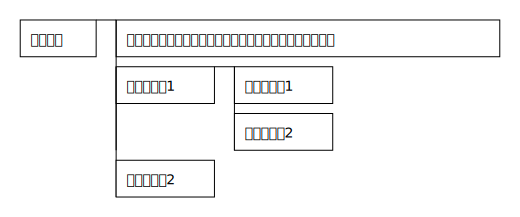

ブロック
1行がPADの1ボックスと対応します。空白行や「#」(シャープ)から始まる行は読み飛ばします。
#コメント a = 10 a を表示
ブロック内の改行 (@)
文中に「@」(アットマーク)を使用した場合、改行文字として扱われます。文末に「@」が現れた場合は、改行を行うとともに、次の行も含めてPADの1ボックスを作成します。
例1:
a = 10 a を表示@標準エラー出力に出力 a = 0
例2:
a = 10 a を表示@ 標準エラー出力に出力 a = 0

親子関係 (Tab)
タブ文字でインデントをつけることで、ブロックの親子関係を記述できます。
ブロック タブインデントを上げる事で子のブロックを定義できます 小ブロック1 孫ブロック1 孫ブロック2 子ブロック2
命令文 (:)
条件分岐や繰返し文など、特別なボックスを作成するには、「:」(コロン)から始まる命令文を使用します。文頭で「:」を使用した場合のみ命令文と認識されます。文中で「:」を使用した場合は、命令文ではなく通常の文字として扱われます。
以下の命令文が定義されています。
:comment… コメントを定義する:terminal… 端子を定義する:call… 関数呼び出しを定義する:if… 条件分岐（真／偽）を定義する:else…:ifと組み合わせて使用し、偽の場合を定義する:switch… 条件分岐（任意のケース）を定義する:case…:switchと組み合わせて使用し、指定のケースを定義する:while… 前判定の繰り返し処理を定義する:dowhile… 後判定の繰り返し処理を定義する
:terminal 開始 :comment コメント文 :call 関数呼び出し 中身 :if 条件式 真の場合 :else 偽の場合(:else以下は省略可能) :switch 条件 :case ケース1 ケース1の中身 :case ケース2 ケース2の中身 :case ... ケース文は必要に応じていくつでも追加できます :while 繰り返し条件（先判定） 中身 :dowhile 繰り返し条件（後判定） 中身 :terminal 終了